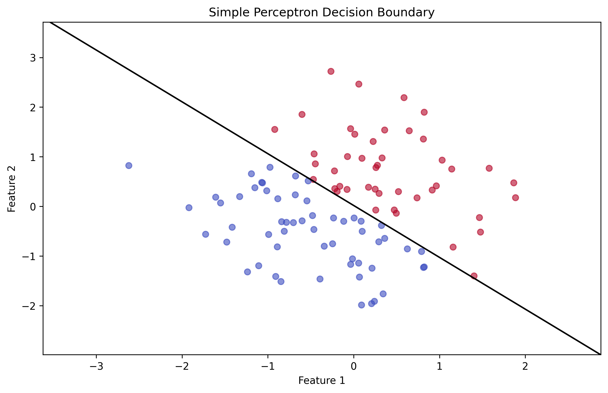
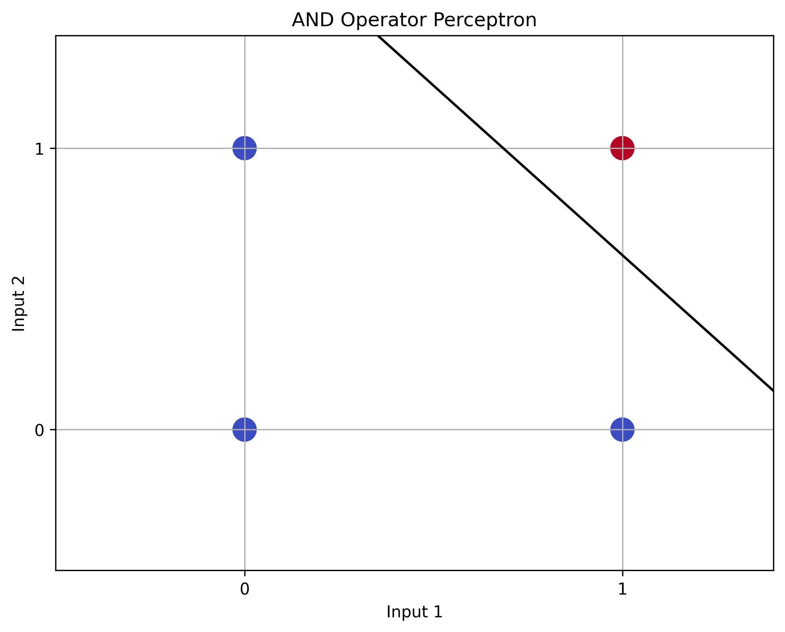
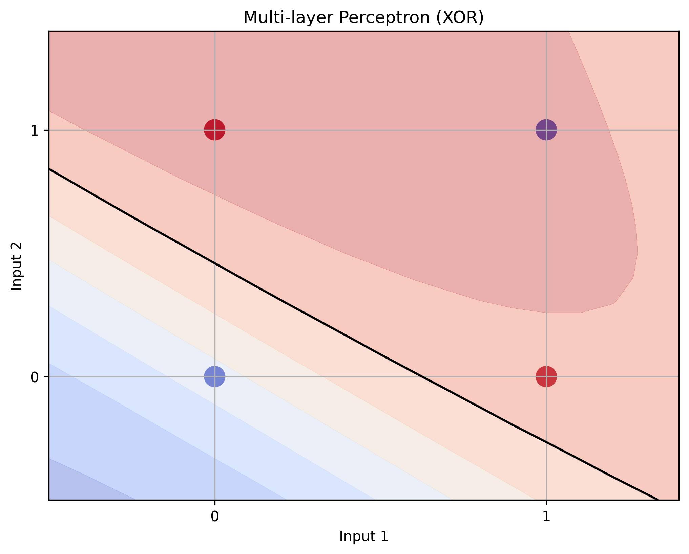

Unit 7 - Perceptron Analysis
Perceptron Analysis
This analysis explores the fundamental concepts of neural networks through the implementation of perceptrons. We examine three key implementations: Simple Perceptron, AND Operator Perceptron, and Multi-layer Perceptron.
Learning Outcomes
- Understand the fundamental architecture of neural networks
- Implement different types of perceptrons
- Analyze the limitations of single-layer perceptrons
- Explore the power of multi-layer networks
- Apply backpropagation for weight updates
Task A: Simple Perceptron Implementation
Basic Structure
# Import required libraries
import numpy as np
import matplotlib.pyplot as plt
# Define activation function (sigmoid)
def sigmoid(x):
return 1 / (1 + np.exp(-x))
# Initialize weights and bias
weights = np.random.randn(2)
bias = np.random.randn(1)
# Training loop
for epoch in range(epochs):
# Forward pass
output = sigmoid(np.dot(inputs, weights) + bias)
# Backward pass
error = target - output
weights += learning_rate * np.dot(inputs.T, error)
bias += learning_rate * np.sum(error)

Simple Perceptron Results
{kind=link}
Task B: AND Operator Perceptron
Implementation
# Define AND gate inputs and outputs
inputs = np.array([[0, 0], [0, 1], [1, 0], [1, 1]])
targets = np.array([[0], [0], [0], [1]])
# Initialize weights and bias
weights = np.random.randn(2, 1)
bias = np.random.randn(1)
# Training loop
for epoch in range(epochs):
# Forward pass
output = sigmoid(np.dot(inputs, weights) + bias)
# Backward pass
error = targets - output
weights += learning_rate * np.dot(inputs.T, error)
bias += learning_rate * np.sum(error)

AND Operator Results
{kind=link}
Task C: Multi-layer Perceptron (XOR)
Implementation
# Define XOR gate inputs and outputs
inputs = np.array([[0, 0], [0, 1], [1, 0], [1, 1]])
targets = np.array([[0], [1], [1], [0]])
# Initialize weights for hidden and output layers
weights_0 = np.random.randn(2, 3)
weights_1 = np.random.randn(3, 1)
bias_0 = np.random.randn(1, 3)
bias_1 = np.random.randn(1, 1)
# Training loop
for epoch in range(epochs):
# Forward pass
hidden = sigmoid(np.dot(inputs, weights_0) + bias_0)
output = sigmoid(np.dot(hidden, weights_1) + bias_1)
# Backward pass
error = targets - output
delta_1 = error * output * (1 - output)
delta_0 = np.dot(delta_1, weights_1.T) * hidden * (1 - hidden)
weights_1 += learning_rate * np.dot(hidden.T, delta_1)
weights_0 += learning_rate * np.dot(inputs.T, delta_0)
bias_1 += learning_rate * np.sum(delta_1, axis=0)
bias_0 += learning_rate * np.sum(delta_0, axis=0)

XOR Problem Results
{kind=link}
Key Findings
- The simple perceptron demonstrated basic learning capabilities but was limited to linearly separable problems
- The AND operator perceptron successfully learned the logical AND operation
- The multi-layer perceptron solved the XOR problem, demonstrating the power of hidden layers
- Backpropagation proved effective for training multi-layer networks
- The learning rate and weight initialization significantly impacted training success